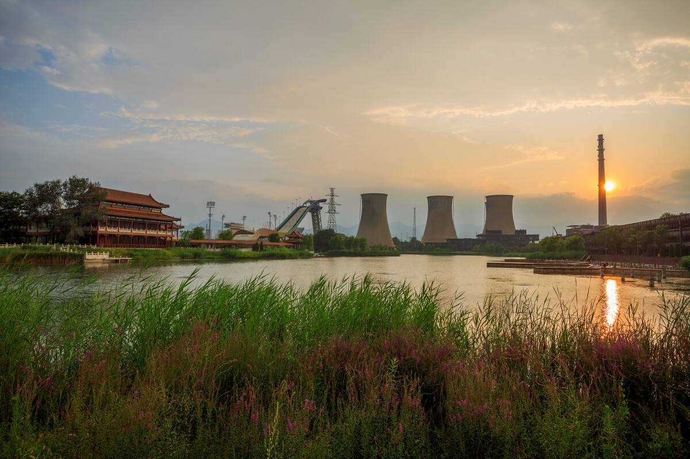

群明湖
群明湖坐落于首钢北京园区内，是原首钢工业系统的冷却晾水池。经过首钢人的精心装扮，这里不仅成为了一处水质清澈的人工湖，更是成为一处优美景观。
一开始我认为冷却晾水池能有多大，居然也敢称“湖”？可当我来到群明湖时我被眼前的景象惊呆了。宽广的水面足有20多个足球场那么大，与牌楼、甬道长廊、观景楼、石拱桥等共同组成一副美丽的图画。看了介绍才知道群明湖水域面积 20 万平方米，陆地面积 3 万平方米，绿化面积约 8000 平方米，不愧称之为"湖"啊！
随着首钢工业遗址园的建设，群明湖也焕发新的生机，变得越来越美。高大挺拔，端庄秀丽的牌楼；宽阔平坦，大气异常的甬道；金碧辉煌，雕梁画柱的长廊；中间的石拱桥以中国园林独有的建筑形式，成为群明湖点睛之笔。我在湖边漫步，天空如此睛朗，湖面静静的，岸边杨柳依依，牌楼，甬道，仿吉亭合长廊、小桥倒影在湖中，一时间我竟不知自己是身处西湖还是颐和园了。
群明湖，让人留连忘返。
